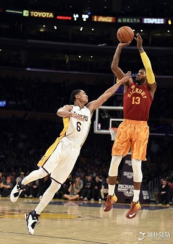
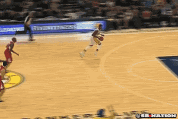

保罗.乔治
中文名: 保罗・乔治
外文名: Paul George
别 名: 泡椒、PG-13
国 籍: 美国
出生地: 美国加州棕榈谷
出生日期: 1990年5月2日
身 高: 2.06米
体 重: 95公斤/210磅
运动项目: 篮球
所属运动队: 印第安纳步行者队
号 码: 13号
场上位置: 前锋
选 秀: 2010年第一轮10位被步行者队选中
专业特点: 投篮、突破、防守
中文名: 保罗・乔治
外文名: Paul George
别 名: 泡椒、PG-13
国 籍: 美国
出生地: 美国加州棕榈谷
出生日期: 1990年5月2日
身 高: 2.06米
体 重: 95公斤/210磅
运动项目: 篮球
所属运动队: 印第安纳步行者队
号 码: 13号
场上位置: 前锋
选 秀: 2010年第一轮10位被步行者队选中
专业特点: 投篮、突破、防守

保罗.乔治全明星集锦

保罗.乔治十佳扣篮
保罗.乔治为数不多的集精准投篮
与劲爆身体素质于一身的球员
他既有超远的投篮，又有漂亮的扣篮
还有一流的防守，是一位非常全能的球员
从小被姐姐狂虐 儿时"拜师"科比学受伯德青睐
2年两入东决连败詹皇 三年完成惊艳三级跳
腓骨骨折险些退役 重伤247天后涅��重生
面对即将来临的新赛季，乔治充满信心，他说：“当我进入NBA后，我从替补开始打起，然后成为先发，之后再成为全明星赛的一员，我现在的目标就是成为MVP。”从替补走上先发，乔治实现了人生的第一次逆袭；遭受重创的保罗-乔治，正沿着他曾经走过的路继续努力地迈进。